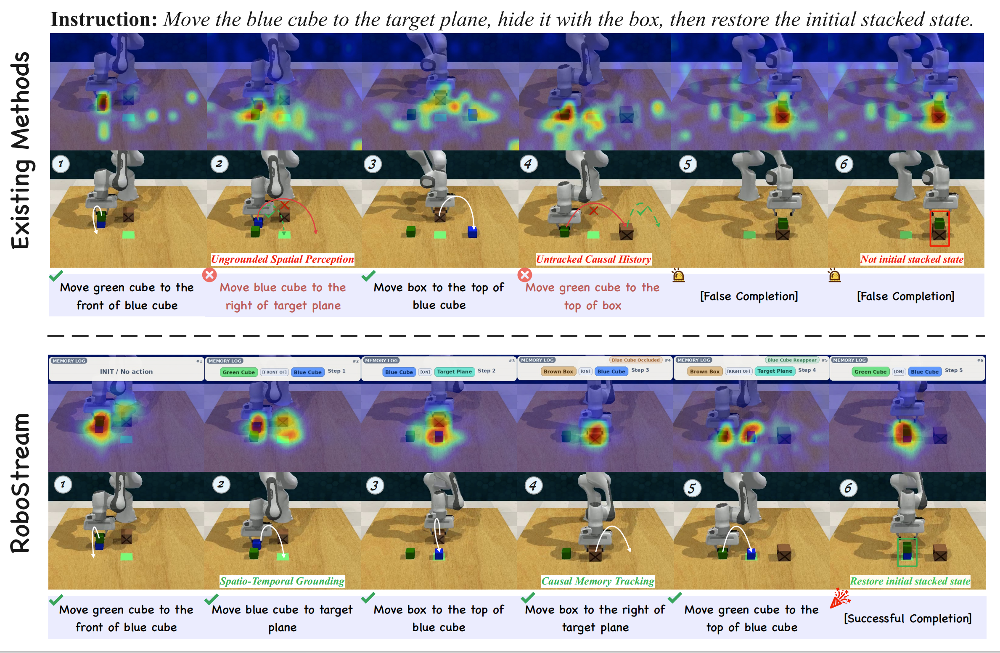
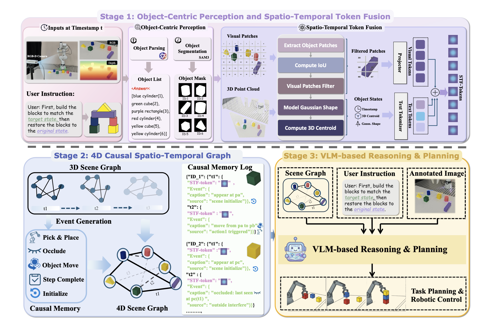
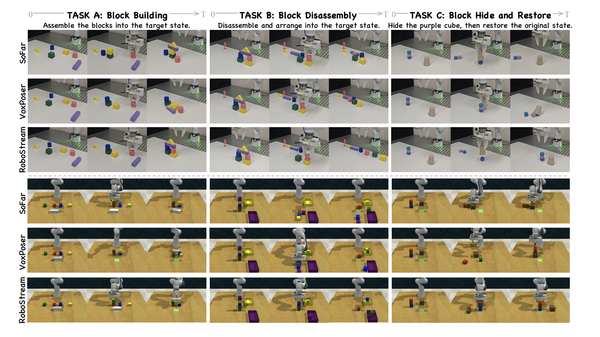
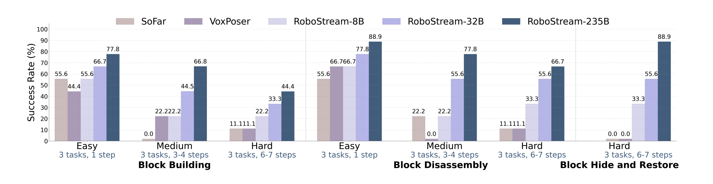
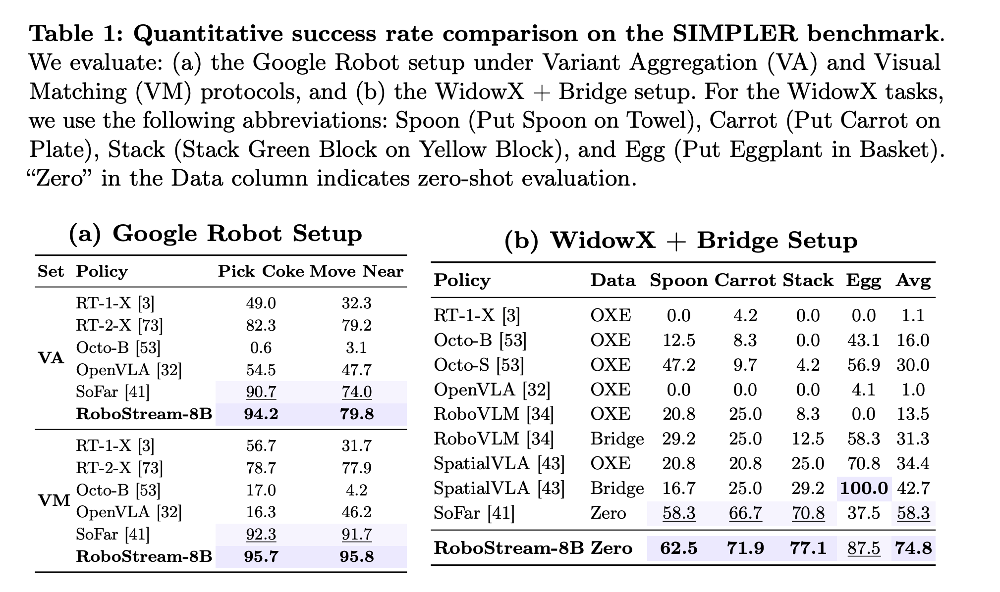
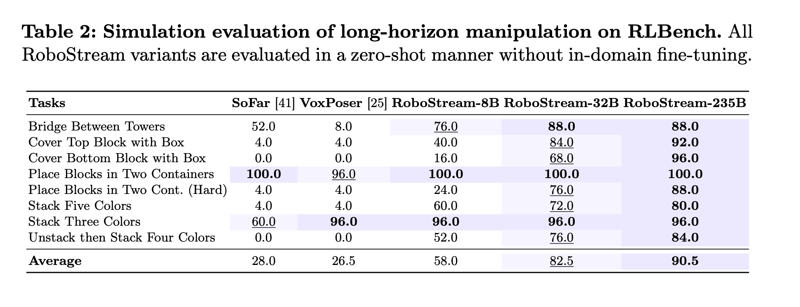
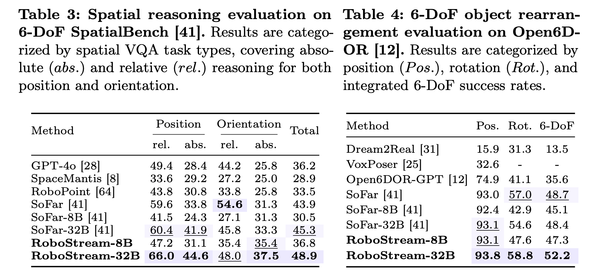
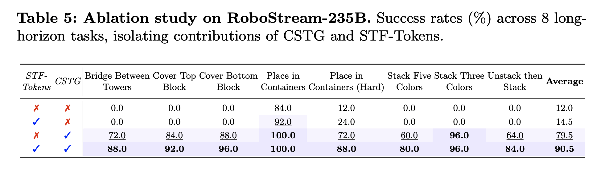

Under Review

1. Persistent Spatio-Temporal Memory: We propose RoboStream, a training-free framework that introduces Spatio-Temporal Fusion Tokens (STF-Tokens) to bind visual evidence with 3D geometric attributes, enabling persistent object grounding across long horizons.
2. Causal Reasoning Graph: We develop a Causal Spatio-Temporal Graph (CSTG) that records action-triggered state transitions, allowing the planner to trace causal chains and maintain object permanence even under occlusion.
3. Training-Free Framework: Unlike prior methods requiring extensive fine-tuning, RoboStream leverages pre-trained VLMs with structured memory to achieve robust reasoning without additional training.
4. Superior Performance: RoboStream achieves 90.5% success rate on long-horizon RLBench tasks and 44.4% on challenging real-world block manipulation, significantly outperforming state-of-the-art baselines like SoFar and VoxPoser (11.1%).
Assemble the blocks to match the goal image.
Assemble the blocks to match the goal image.
Disassemble the structure to match the goal image.
Disassemble the structure to match the goal image.
Hide the purple cube with the brown cup, then restore.
Hide the purple cube with the brown cup, then restore.
Bridge two towers with a long block.
Hide blue cube, then restore.
Hide red cube, move box, restore.
Place blocks into target containers.
Place blocks into target containers (Hard).
Stack five colored blocks.
Stack three colored blocks.
Sort cubes by color, then restore.

STF-Tokens bind visual evidence with explicit 3D geometry, while CSTG tracks object states and action-triggered transitions over time. This allows the VLM planner to reason with stable object references and causal history, reducing cascading failures under occlusion.






@inproceedings{robostream2026,
title={RoboStream: Weaving Spatio-Temporal Reasoning with Memory in Vision-Language Models for Robotics},
author={Anonymous Authors},
booktitle={European Conference on Computer Vision (ECCV)},
year={2026}
}